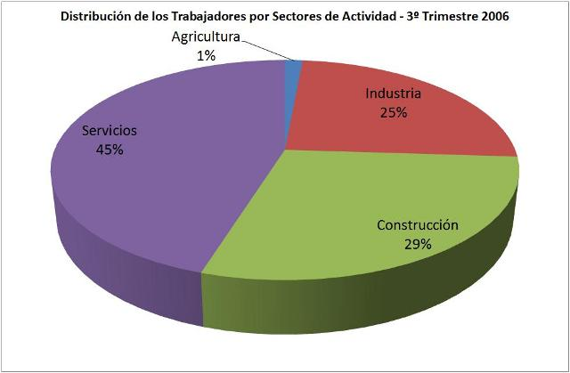

Maltrato Infantil
Descripción:
Número total niños menores a los 15 años que sufren maltrato en Torreón, estos son mostrados por edades y sexo.
El indicador ayuda a precisar el desarrollo y creación de políticas públicas para la prevención del maltrato infantil.

Durante el 2012 los accidentes de transito en la comarca lagunera aumentaron un 12% en relación a los accidentes ocurridos el año pasado.
Numeros de interes
- Hombres fallecidos por accidentes el ultimo trimestre del año: 20
- Mujeres fallecidad por accidentes el ultimo trimestre del año: 13
Fuentes:
[1] Consejo Nacional de Población (CONAPO).Índice de Marginación para las AGEBs urbanas se agrupan en base a la técnica de Estratificación Óptima de Dalenius y Hodges.
Los indicadores se desarrollaron a partir de la metodología de:
González, F; Valtierra, A; Izquierdo, J. y Franco, M. (2011). Sistema de Indicadores para la Gobernanza Urbana (SIGU). Cancún, Quintana Roo, México: Observatorio de Violencia Social y de Género de Benito Juárez Q. Roo, Observatorio Urbano Local de la Ciudad de Cancún, Universidad del Caribe y Bufete de Estudios Interdisciplinarios A.C.
Regresar a las Estadisticas >>